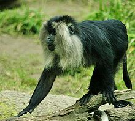
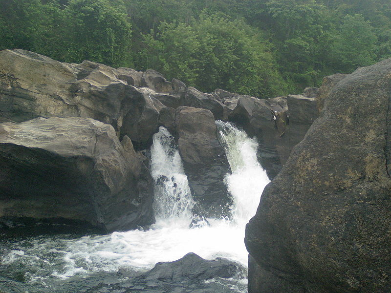
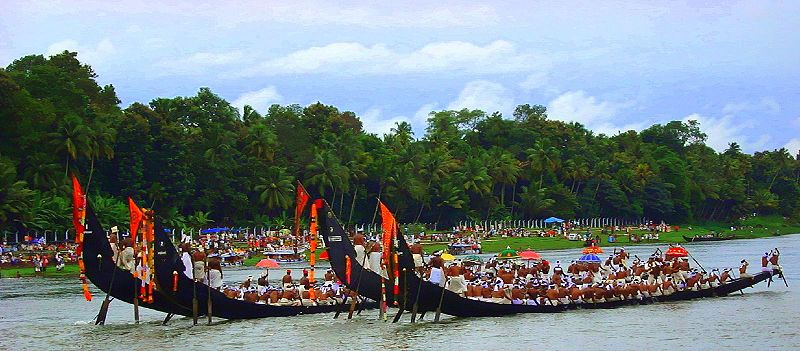

PERIYAR :
Set high in the ranges of the Western Ghats, in Kerala, is the Periyar National Park and Tiger Reserve.
The park has a picturesque lake at the heart of the sanctuary.
Formed with the building of a dam in 1895, this reservoir meanders around the contours of the wooded hills, providing a perennial source of water for the local wildlife.
Herds of elephant and sambar, gaur and wild pigs wander down to the lakeside and can be observed from the launches that cruise the lake.
In March and April, during the driest period here, the animals spend a lot of time near the lake and the elephants can be seen bathing and swimming in the reservoir.

 

HOME
NEXT